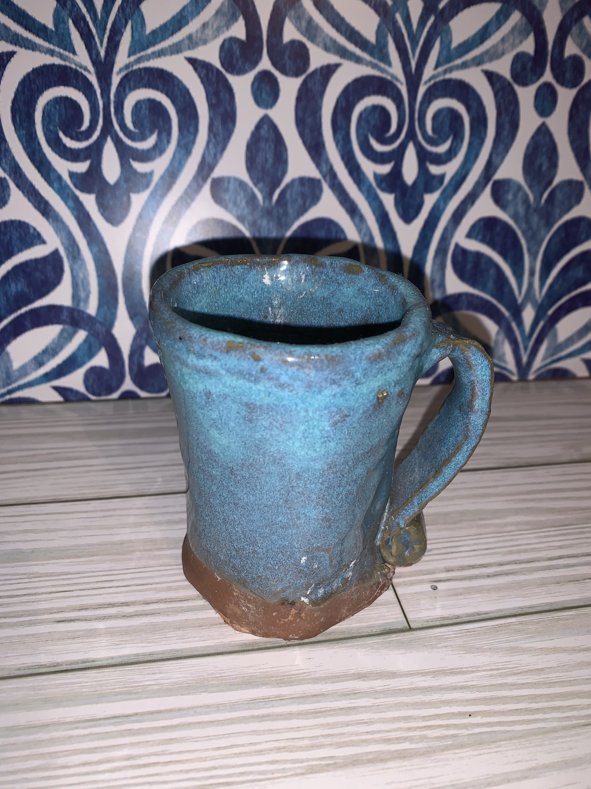
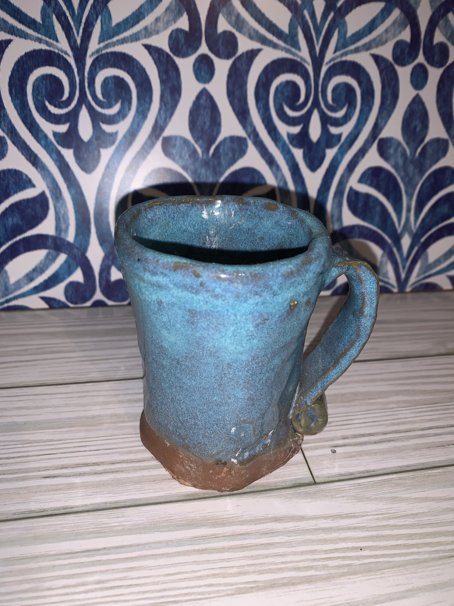

Hello! My Name is Brittany and I'm an art enthusiast! For over 14 years I've spent lots of time learning, and experimenting with different types of art mediums. So far these are a few of my favorites! My main goal with art is to share what I've learned over the years with as many people who are interested, in doing so I get to help keep the love for the arts alive! Crochet at the moment is something I've been using as a wind down activity that challenges my focus, and patience as does painting. Ceramics itself is something very different. I was given the opportunity to give ceramics a try my very first time in 2017 by using the method of hand building to create my first mug. My art journey itself has been influenced by many incredible individuals from family and friends I've met along the way, to the many teachers I've had the pleasure of learning from through elementary school on up to college.
 
